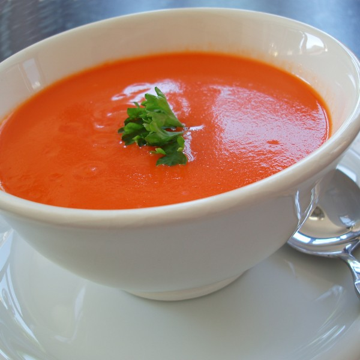

Klassieke Tomatensoep
Dit gerecht maakt een goed voorgerecht, Omdat je dan goed kan beginnen met je maaltijd, en het vooral lekker met een stuk stokbrood.
Ingrediënten
- 1 ui, gesnipperd
- 2 tenen knoflook, fijngesneden
- 750 gr romatomaten, in parten
- 750 ml water
- 2 groentebouillontabletten
- 1 klein blikje tomatenpuree
- 2 eetlepel kookroom
- 2 eetlepel olijfolie
- Stokbrood of croutons
Bereidingswijze
- Zet een soeppan op het vuur en fruit de uien en knoflook ongeveer 3 min de olijfolie.
- Voeg de tomaten parten toe en bak deze 10 min mee.
- Voeg het water en bouillon blokjes toe en roer de tomatenpuree er door heen.
- Pureer nu alles met een staafmixer en laat een paar minuutjes doorkoken
- Serveer in 4 borden of kommen en serveer het ook met een stuk stokbrood

Tip Probeer veel groenten in de soep te doen dan is de soep nog veel lekkerder.